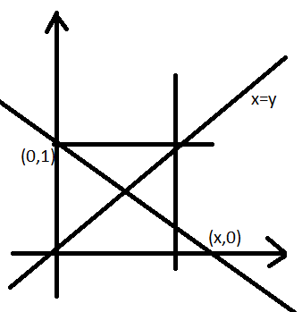

1. Two numbers x1 and x2 are chosen at random from 1 to 30 inclusive.
Column A Column B
The probability The probability
that x1=1. that x2=30.
A. The quantity in Column A is greater.
B. The quantity in Column B is greater.
C. The quantities in both the columns are equal.
D. The relationship cannot be determined from the information given.
2. Out of $1000 with him, a man invested certain amount at 4% per annum and rest at 6% per annum. The interest earned at the end of year was $48.
Column A Column B
The amount invested The Amount invested
at 4% rate per annum. at 6% rate per annum.
A. The quantity in Column A is greater.
B. The quantity in Column B is greater.
C. The quantities in both the columns are equal.
D. The relationship cannot be determined from the information given.
3. A certain clock rings two notes at quarter past of an hour, four notes at half past, and six notes at three quarter past, of an hour. It rings eight notes plus an additional number of notes equal to whatever hour it is. How many notes will the clock ring between 1:30 PM and 5:00 PM, including the rings at 1:00 PM and 5:00PM?
4. A 50 liter solution of alcohol and water is 5% alcohol. If 1 ½ liters of alcohol and 8 ½ liters of water are added to this solution. What percent of the solution produced in alcohol?
A. 5 ½%
B. 6%
C.1/3 %
D. 6 %
E. 7%
5. For any non negative integer n, Let [n] = n + 1.
Column A Column B
[8/2] [8]/[2]
A. The quantity in Column A is greater.
B. The quantity in Column B is greater.
C. The quantities in both the columns are equal.
D. The relationship cannot be determined from the information given.
6. Working independently, Susan can perform a certain task in 6 hours and Tom can perform it in 7 hours, If Susan and Tom work together at task for 3 hours, at which point Susan leaves, how many hours will it take Tom to complete the remaining task alone?
A.12/11
B.2/5
C.1/2
D.29/42
E. 1
7. ‘A’ is the sum of nos. from 1 to 50 inclusive and ‘B’ is the sum of nos. from 51 to 100 inclusive what is the value of B – A?
8. A certain school has two types of teachers employed in the school, graduates and post graduates. Graduate teachers are two fifth of the total strength and post graduate males are one fourth of total strength of post graduate teachers. Post Graduate male teacher are what fraction of total strength of teachers?
A.1/4
B.1/20
C.1/10
D.3/20
E.1/5
9. If ‘A’ is an element of a set of all multiples of 3, including 3 but not greater than 48 and ‘B’ is an element of a set of all negative integers not less than -25. What is the largest value of A + B?
A. 47
B. 24
C. 23
D. 73
E. 96
10. Triangle A has vertices (0,0),(0,4) and (3,0) and triangle B has vertices (0,0), (-3,0) and (0,-4).
Column A Column B
The area of A The area of B
A. The quantity in Column A is greater.
B. The quantity in Column B is greater.
C. The quantities in both the columns are equal.
D. The relationship cannot be determined from the information given.
11. On a 50 question multiple choice test 3 points were given for each question answered correctly and 1 point was deducted for each question answered incorrectly. A student who answered all of the questions on the test received a total of 98 points.
Column A Column B
The number of question on the 14
test that the student answered
incorrectly.
A. The quantity in Column A is greater.
B. The quantity in Column B is greater.
C. The quantities in both the columns are equal.
D. The relationship cannot be determined from the information given.
12. If (0.0015 x 10m) / (0.03 x 10k) = 5 x 107 than m – k = ?
A. 9
B. 8
C. 7
D. 6
E. 5
13. Of 30 applications for a job, 14 had at least 4 years of experience, 18 had degree, and 3 had less than 4 years experience and did not have a degree. How many of the applicants have at least 4 yeas experience and a degree?
A. 14
B. 13
C. 9
D. 7
E. 5
|  |
14. In the rectangular co ordinate system above the shaded region is bounded by straight a line. Which of the following is not an equation of the boundary lines?
A. x = 0
B. y = 0
C. x = 1
D. x – y = 0
E. x + 2y = 2
15. A man bought x oranges at a price equal to $y an orange, z oranges out of which were found to be damaged, which of the following is an expression for percent profit on remaining oranges if they were sold at a price equal to $w an orange and it was found that he made profit?
A.{w(x-z)/xy-1} ×100
B. {wx-wz/xy}x 100
C. { [xy-w(x-z)]/w(x-z) } x 100
D. {z-x/z} x 100
E. {xy/zw}× 100
16. Which of the following must not yield an integer when divided by 10?
A. The sum of two odd integers.
B. An integer less than 10.
C. The product of two primes.
D. The sum of three consecutive integers.
E.An odd integer.
17. Column A Column B
Number of primes Number of multiples of
smaller than 12. 5 not greater than 25.
A. The quantity in Column A is greater.
B. The quantity in Column B is greater.
C. The quantities in both the columns are equal.
D. The relationship cannot be determined from the information given.
18. A regular textbook page measures 8 ½ inches by 11 inches. The page if partitioned into rectangular spaces each 1/12 inch by 1/8 inch.
Column A Column B
The number of such spaces 17 × 11 × 48
on the textbook page.
A. The quantity in Column A is greater.
B. The quantity in Column B is greater.
C. The quantities in both the columns are equal.
D. The relationship cannot be determined from the information given.
FOR QUESTIONS 19 AND 20, SELECT ALL THE ANSWER CHOICES THAT APPLY.
19. If a and b are both positive even integers, which of the following must be even?
A. ab
B. (a + n)b
C. a(b + 1)
20. The integers r and s are distinct,r ≠0 , and s ≠0 . If r2s2 = -rs, which of the following COULD be true?
A. r = -1
B. s = 1
C. r – s = 0